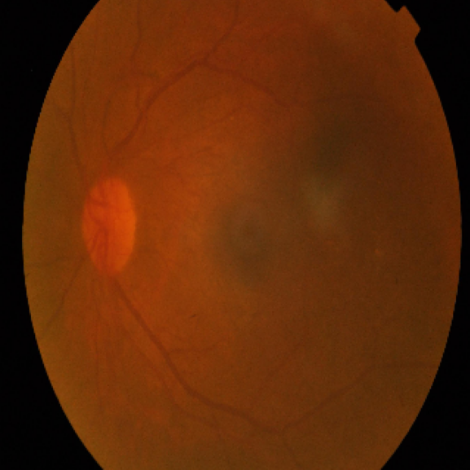
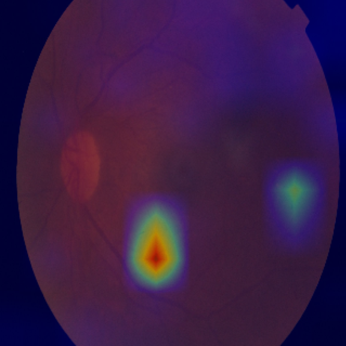
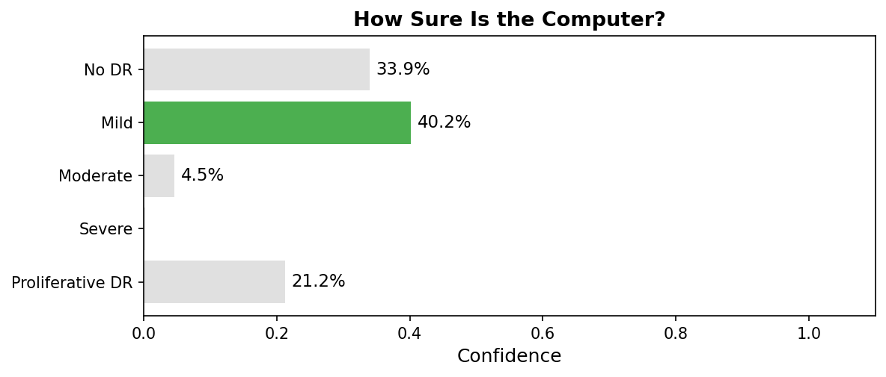

Eye Screening Results
Notice for the health worker: This screening was performed by a computer program (artificial intelligence), not a doctor. Please communicate this to the patient and emphasize that a doctor should confirm the result.
Patient Information
Patient ID: 75a4343b12f9
Age: 22
Gender: Female
How This Screening Works
Read or paraphrase this to the patient:
A photo was taken of the back of the patient's eye using a smartphone with a special lens. A computer program analyzed the photo for signs of blood vessel damage that can be caused by diabetes.
Who Is Involved in This Decision
- You (the health worker) took the eye photo.
- A computer program analyzed it.
- A doctor should confirm the result before any treatment decisions.
What Data Was Used
The computer used only the eye photo to produce the screening result. The model does not use age or gender for its analysis. Age and gender are recorded in the patient's medical file for clinical context only.
Screening Result: Mild
The screening found mild signs of diabetic eye damage. This means there may be small changes in the blood vessels in your eye.
Eye Photo and Computer Focus Area

Patient's eye photo

The colored areas show where the computer
looked most closely. Red and yellow indicate
areas of higher attention.
Computer Confidence

The computer gave this result a low score (40 out of 100). The computer was not very certain, so please see a doctor for a full exam to confirm.
Recommended Action
Communicate the following to the patient:
Please see an eye doctor for a full eye exam. Early changes were found, and a doctor can tell you more. Keep managing your blood sugar and attend regular checkups.
Reminder: This is a screening tool only. It does not replace a full eye exam by a doctor. Please refer the patient to a medical professional for a complete evaluation.